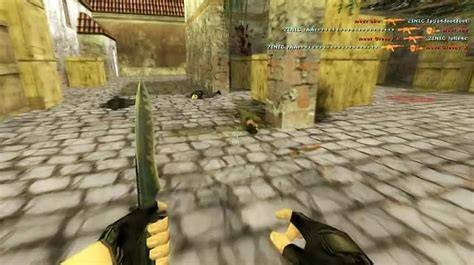
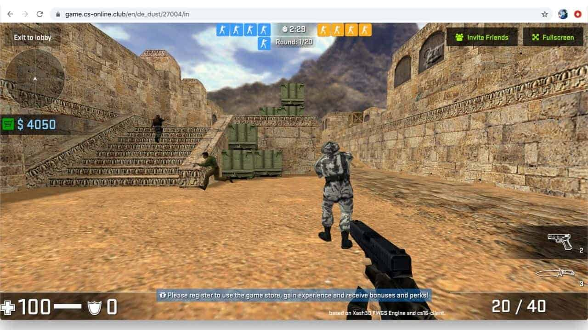
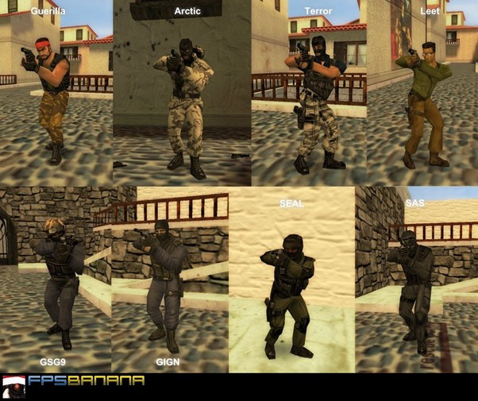

⭐ Core Gameplay CS 1.6 is a team-based tactical shooter where two sides compete: • Terrorists (T) • Counter-Terrorists (CT) Each round, players earn money based on performance and use it to buy weapons and equipment. The game emphasizes: • Fast but highly skill-based shooting • Tight movement mechanics (strafe-jumping, bunny hopping, crouch-spraying) • Team coordination and map control • Classic “one-life per round” tension
🎯 Common Game Modes • Bomb Defusal (de_ maps) – Terrorists plant the bomb; CTs must stop them. • Hostage Rescue (cs_ maps) – CTs attempt to rescue hostages; Terrorists defend. • Custom community modes also became popular (surf, kz, zombie mod, deathrun, etc.).
Notable Features • Highly recognizable weapon roster (AK-47, M4A1, AWP, Desert Eagle, MP5). • Simple but skill-intensive graphics and physics. • Strong LAN and online multiplayer culture—Internet cafés, clan wars, and early tournaments. • Massive modding and mapping community: maps like de_dust2, de_inferno, cs_assault, and aim_ak_colt became legends.
🎮 Legacy Counter-Strike 1.6 is widely regarded as: • A founding pillar of competitive FPS esports. • One of the most played PC games in the 2000s. • Still alive today through community servers, tournaments, and mods. It laid the foundation for later titles like CS: Source, CS: Global Offensive, and CS 2, but maintains a loyal fanbase thanks to its simplicity, precision, and nostalgia. If you'd like, I can also describe: • Its movement and shooting mechanics in detail • The history of its competitive scene • Key differences between CS 1.6 and CS:GO/CS2 • The most iconic maps and weapons
